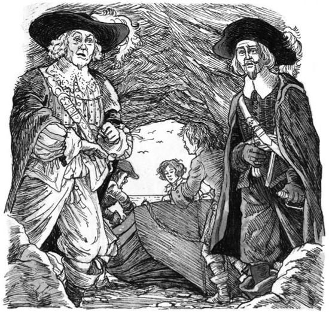
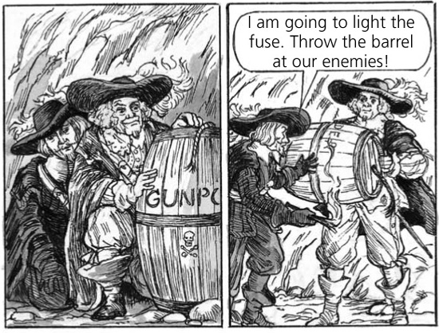

13
Thoát khỏi
D'Artagnan đã rời đảo Belle-Isle. Aramis và Porthos nhìn thấy chiếc thuyền nhỏ của anh trở về với đội tàu của Nhà vua. Vài phút sau, tất cả các con tàu bắt đầu tiến về phía đất liền. Aramis quay sang bạn mình.
Anh nói: 'Kế hoạch đầu tiên của D'Artagnan đã không thành công, Porthos ạ. Anh ấy không thể đưa chúng ta vào đất liền. Bây giờ anh ấy sẽ từ chức lính ngự lâm. Anh ấy sẽ đến gặp Nhà vua ở Nantes. Các con tàu sẽ quay trở lại đất liền cùng D'Artagnan. Họ sẽ không đến đây lại cho đến ngày mai. Đêm nay, chúng ta sẽ trốn thoát! Có một chiếc thuyền bên trong hang Locmaria. Chúng ta sẽ lấy nó. Chúng ta sẽ đến Tây Ban Nha.
Bỗng nhiên, họ nghe thấy ai đó hét lên từ pháo đài. Người đàn ông hét rằng: 'Bọn lính đang đến!'
Aramis nói: 'Họ đã không đến đất liền. Đó là một mánh khóe!'
Aramis và Porthos nhìn ra phía biển. Gần bờ biển, họ thấy nhiều chiếc thuyền nhỏ. Trên thuyền là những người lính của Nhà vua.
Aramis hét với những người dân đảo: 'Lấy kiếm! Lấy súng!'
Vài phút sau, cuộc giao chiến bắt đầu. Bọn lính đánh nhau với những người đàn ông ở Belle-Isle, còn Porthos và Aramis đánh nhau với những người lính của Nhà vua. Đó là một cuộc chiến đấu dài, nhưng cuối cùng thì những người lính của Nhà vua bắt đầu chạy về thuyền của mình. Aramis và Porthos đuổi theo họ.
Nhưng vài phút sau, hai người đàn ông này nghe thấy tiếng súng ở phía bên kia hòn đảo.
Aramis tức giận nói: 'Một mánh khóe nữa!' 'Chúng ta đang đánh nhau với những người đàn ông ở pháo đài. Nhưng cùng lúc đó, có thêm nhiều lính nữa đang đến bờ bên kia đảo này!'
Chẳng mấy chốc, tất cả những người đàn ông và đàn bà trên đảo đều chạy vào pháo đài.
Họ hỏi Aramis: 'Chúng tôi phải làm gì?'
Giám mục nói: 'Các bạn của ta, Nhà vua đã bắt giữ ngài Fouquet. Ông ấy đang ở trong nhà tù Bastille. Bạn chúng ta là D'Artagnan đã nói với chúng ta như vậy. Bây giờ, các bạn phải tuân lệnh của Nhà vua. Đừng đánh nhau với quân lính nữa. Hãy đặt súng xuống. Bình tĩnh quay về nhà của các bạn.'
Mọi người ngạc nhiên, nhưng họ quay người và lặng lẽ đi.
Aramis nói: 'Chúng ta đã cứu những người này. Nhưng bọn lính sẽ cố giết chúng ta. Chúng ta phải chạy đến hang động ngay bây giờ! Thuyền của chúng ta đang chờ, và có ba người bạn ở đó. Họ sẽ giúp chúng ta!'

Vài phút sau, Aramis và Porthos đang ở một lối đi tối tăm ở phía sau hang Locmaria. Họ không thể nhìn thấy bất cứ thứ gì.
Aramis khẽ nói: 'Yves, anh có ở đó không? Mọi thứ đã sẵn sàng chưa?'
Một giọng trả lời: 'Có, thưa ngài. Tôi ở đây. Jean cũng ở đây. Và con trai anh ấy cũng ở cùng chúng tôi.'
Aramis và Porthos bước ra khỏi lối đi vào hang động lớn. Yves, Jean và con trai của anh ta đang đợi bên một chiếc thuyền nhỏ. Ở đầu kia của hang động có một lối mở - cửa hang. Bên ngoài cửa hang là một bãi biển.
Aramis nói: 'Đẩy thuyền ra biển đi.'
Ba người đàn ông bắt đầu đẩy thuyền về phía cửa hang. Nhưng đột nhiên có tiếng hét từ phía sau lối đi.

Aramis nói với Porthos: 'Bạn của tôi, kẻ thù của chúng ta đang đi dọc theo lối đi. Hãy trốn trong góc đó. Bọn lính của Nhà vua sẽ lần lượt đi ra khỏi lối đi. Hãy giết chúng một cách êm thấm!'
Porthos đến một góc tối ở một bên lối đi. Anh ta nhặt một tảng đá nặng. Aramis đến một góc khác.
Đột nhiên, một sĩ quan bước ra khỏi lối đi vào hang động.
Aramis khẽ nói: 'Bắt đầu nào!'
Porthos dùng tảng đá đập vào đầu viên sĩ quan. Người đàn ông đó ngã xuống đất. Hắn đã chết! Aramis kéo hắn vào góc của mình.
Sau vài giây, một người lính khác đi theo viên sĩ quan. Aramis lại nói: 'Bắt đầu nào!'
Mười lần Aramis nói, 'Bắt đầu nào!' Mười lần tảng đá rơi xuống. Mười người đàn ông đã chết!
Nhưng khoảng một hoặc hai phút sau, hai người bạn nghe thấy có thêm nhiều lính nữa đang đến trong lối đi. Và vài khoảnh khắc sau đó, một sĩ quan - một đội trưởng - bước vào hang. Anh ta không thể nhìn thấy nhóm lính đầu tiên và cũng không thể nghe thấy tiếng của họ. Anh ta không hiểu.
Anh ta tự hỏi: 'Họ ở đâu? Tôi không nghe thấy tiếng súng nào từ bên trong hang.'
Ngay lúc đó, một bàn tay thô kệch của một người đàn ông vươn ra từ một góc của hang động. Bàn tay đó túm lấy cổ viên đội trưởng. Và một phút sau, viên sĩ quan đã chết ngã xuống đất. Nhưng một viên sĩ quan thứ hai đang ở ngay phía sau anh ta. Anh ta thấy viên đội trưởng ngã xuống. Anh ta hét lên với những người lính của mình.
Aramis và Porthos chạy đến một tảng đá lớn. Đằng sau tảng đá là một thùng thuốc súng bằng gỗ nặng.

Những tảng đá bắt đầu rơi từ trên mái hang xuống. Aramis chạy ra bãi biển. Porthos cũng cố gắng trốn thoát, nhưng một tảng đá rất lớn đã rơi trúng anh ta.
Aramis hét lên: 'Porthos! Porthos!'
Giám mục chạy ngược vào hang động, nhưng đã quá muộn. Aramis đã nghe thấy tiếng kêu đau cuối cùng của bạn mình. Sau đó, mọi thứ im lặng.
Yves, Jean và con trai của Jean đưa Aramis đến chiếc thuyền. Họ lên thuyền và chèo ra khỏi bãi biển.
Aramis nghĩ: 'Người bạn dũng cảm của tôi đã chết. Người bạn thân Porthos ạ! Anh ấy luôn muốn giúp đỡ người khác.'
Một giờ sau, chiếc thuyền nhỏ đã ra khơi đến Tây Ban Nha.
Ba người đàn ông từ Belle-Isle buồn bã nhìn Aramis. Trong mắt Giám mục có những giọt nước mắt. Chẳng mấy chốc, ông đã ngủ thiếp đi.
Mục lục
- Trang nhan đề
- Trang bản quyền
- Mục lục
- Lưu ý về tác giả
- Lưu ý về câu chuyện này
- 1 Pháo đài Bastille, Paris
- 2 Tù nhân
- 3 Phòng trưng bày Louvre, Paris
- 4 'Con sẽ trở thành vị vua vĩ đại'
- 5 Đại trạch Vaux
- 6 'Ta là vua của nước Pháp!'
- 7 Louis và Philippe
- 8 Fouquet khám phá được bí mật
- 9 Âm mưu của Giám mục
- 10 Hai anh em
- 11 Cuộc họp tại Nantes
- 12 Belle-Isle
- 13 Cuộc bỏ trốn
- 14 Người lính ngự lâm cuối cùng